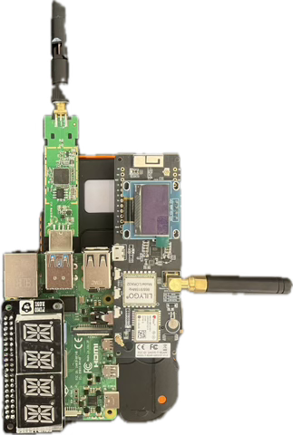

mist Håndholdt wifi detekterings device
mist Projekt fremstillet til rednings, militær og politiaktioner
mist Detekterer mobil-telefon aktivitet i en radius af 700 meter
mist Med direktionel antenne kan DOBBY detektere aktivitet op til 10km+
mist Kan indsættes monteret på en drone og stadig opdatere til operatøren
mist Heatmapping gennem data log og GPS log
mist 10 Timers batteri-levetid med powerbank
mist Krypteret netværk mellem operatør og device
mist Detektering af drone aktivitet
mist Modificerbar antenne tilslutning
For flere information kan vi Kontaktes
Lige så lille som en mobil-telefon
ØG CHANCEN for at finde personer i nødssituation
Prøv prototypen her
NyhederNyhederNyhederNyhederNyhederNyhederNyhederNyhederNyhederNyhederNyhederNyhederNyheder
chevron_right DOBBY (2) er under udvikling som i fremtiden vil sikre brugere der ikke har behov for logging at der ikke vil være nogen mulighed for GDPR overtrædelse
chevron_right Derudover arbejdes der på at DOBBY (2) vil være i stand til ligeledes at kunne supportere LoRa, dog er der pt komplikationer med at få det til at fungere på Raspberry Pi zero, som er en mindre og lettere version.
chevron_right DOBBY(1) er endelig færdig med test fasen, og vi kan nu fokusere på at lave den mere anvendelig med et vandtæt og robust kabinet